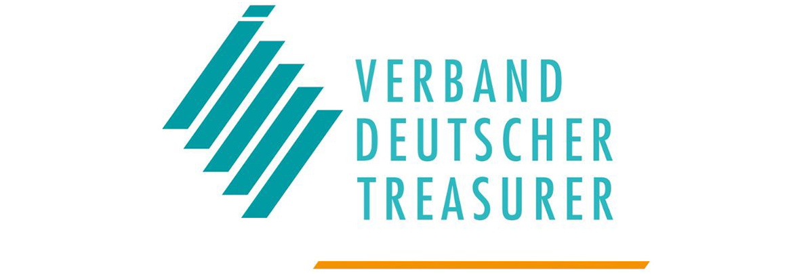
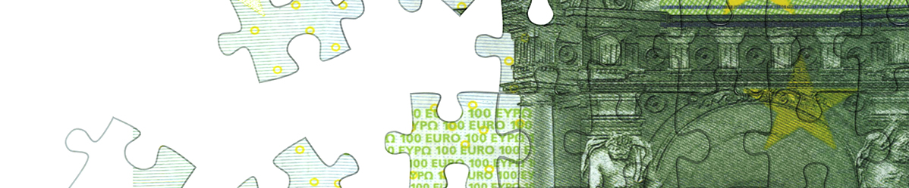

We hope you enjoy the December edition of the EACT Newsletter.
As ever, please do follow the EACT LinkedIn page for the very latest member association news and treasury insight.
Jean-Marc Servat
Chair, EACT
In this issue
The EACT is delighted to launch the second edition of the EACT award. Each of our 23 national treasury associations members can nominate one outstanding treasury project from within their membership for this award. A jury will shortlist nominees, with Treasurers voting to designate the winner in June 2021.
Jean Marc-Servat discusses his role as chairperson for the EACT, the topics on the association's current agenda, and the requirement for treasurers to be tech-savvy in today's economic climate.
Preparing for the definitive end of Libor has been on the mind of policymakers and industry alike for years and we are now entering the final stretch leading up to the definitive cessation of Libor on 31 December 2021 for most currencies in most tenors.
In October 2020, seven major central banks and the Bank for International Settlements (BIS) published a joint report laying out the key requirements for Central Bank Digital Currencies (CBDC). At the same time the European Central Bank (ECB) launched a public consultation on a digital euro and announced it will decide in Q2 2021 whether to pursue the launch of a digital euro.
The EACT – alongside the other signatories of this paper - believe it is critically important that the transition period for third country benchmarks under the Benchmarks Regulation (BMR) should be extended beyond the end of 2021 to end-2025. This would ensure that non-financial companies can continue to use third country benchmarks to hedge risks arising from their commercial activities.
The EACT has become a member of the Global Coalition to Fight Financial Crime (GCFFC).
Corporate treasurers are high risk individuals for becoming victims of financial crime due to their level of access and control over company finances and operations. Raising awareness and encouraging a public-private partnership in the development of effective practices will enhance the ability of companies to shore up their defences against financial crime – in all of its facets.
We are proud to be a member of such a broad coalition to advance dialogue, develop best practices, and shape the evolution of the regulatory landscape to limit the ability of actors to undermine the security and integrity of our financial system and the wider economy.
As the pandemic continues to throw markets into confusion, forcing corporates to battle against unprecedented volatility, treasury functions have an opportunity, albeit uninvited, to prove their strategic value – especially in relation to FX risk management.
On 12 November the EACT and the Loan Market Association (LMA) organised a webinar for treasures on Libor transition and reference rate reform. View a recording here.
After an exciting battle, the winner of the DACT Treasury Award 2020 has been announced. Avebe received most votes from the members of the Dutch Association of Corporate Treasurers (DACT). ASML and Royal Schiphol Group came second and third respectively.

With more than three hundred "player impressions" (counted via the livestream) and the positive feedback afterwards, the 2020 VDT Innovation Award in Cash Management was a success, to which the participants, the viewers and not least the committed VDT office team contributed.
An escalation in fraud and cybercrime activities has been observed in recent months, as cyber attackers have been able to make use of the weaknesses caused by the current health crisis.
This article is from La Lettre du trésorier, No. 381, October 2020, magazine of the AFTE, the French member association of EACT.
TMS’s have evolved over time, and especially in the last couple of years with a huge leap in technologies. Now, treasurers are investigating how TMS's can help in further modernising the finance function in the coming years.

During the pandemic we have increasingly heard how important it is that companies consider their corporate purpose. Typically, this results in a series of nebulous and hard to define concepts, created by marketing and consultancy firms. Return on Purpose looks at a variety of activities that a company undertakes and identifies individual ROIs for each of them to come up with an overall holistic view.
Join us at the ACT Annual Conference at ACC Liverpool, UK, on 21-22 May 2024. A limited number of free places are available for EACT members.
View MoreThe European Associations of Corporate Treasurers (EACT) is pleased to invite its members to submit nominations for the 5th EACT Award in 2024.
View More
We are delighted to reveal the results of the 2023 EACT survey. Discover the top priorities of 250 group treasurers from European multinationals.
View MoreThe European Association of Corporate Treasurers (EACT) is delighted to welcome a new representative for the Association of German Treasurers (VDT).
View MoreWe are delighted to reveal Merck Group as the winner of the 2023 EACT Award, nominated by VDT.
View More